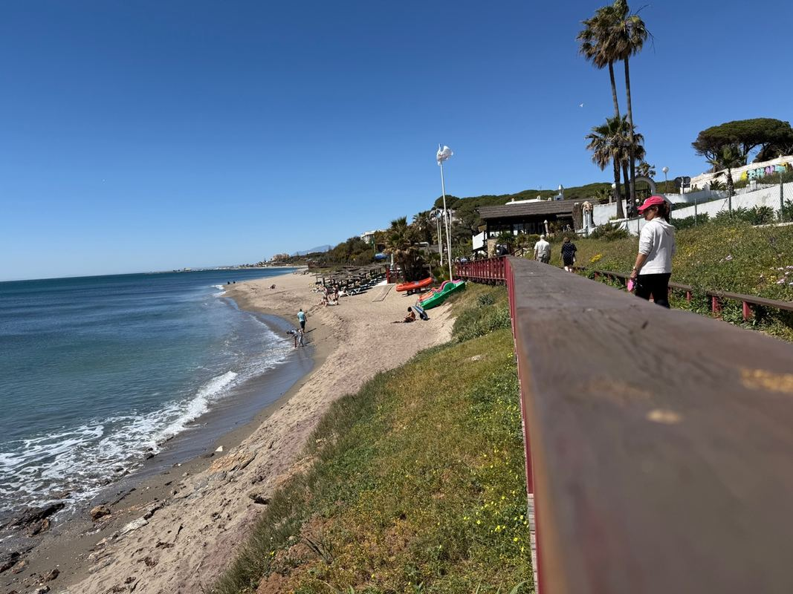

Guía práctica de Marbella para profesores recién llegados

Marbella en septiembre: lo que nadie te cuenta
Septiembre en Marbella es la combinación perfecta para un profesor recién llegado: el calor del verano ya ha bajado ligeramente, la ciudad está menos saturada de turistas, la playa sigue siendo accesible y los precios de supermercados y restaurantes vuelven a ser normales.
Si llegas en junio, te encuentras el final de temporada escolar con buen tiempo, días largos y la ciudad en plena actividad sin el colapso de julio y agosto. Ambos meses son muy agradables para vivir en Marbella si no eres turista.
Cómo orientarse en Marbella: los núcleos principales
- Marbella Centro: el casco histórico y la zona comercial principal. Servicios completos, pero tráfico y precios más altos.
- San Pedro de Alcántara: núcleo propio con comercio local, mercado semanal y ambiente más tranquilo. Muy valorado por residentes.
- Cabopino (Marbella Este): zona residencial tranquila con playa natural, marina deportiva y urbanizaciones bien conservadas.
- Nueva Andalucía: zona residencial interior bien comunicada, con muchas urbanizaciones y centros comerciales.
- Estepona: no es Marbella, pero muchos profesores destinados en la zona occidental viven allí por los precios.
Supermercados y compras del día a día
Marbella tiene buena cobertura de grandes superficies. Los más útiles para el día a día:
- Mercadona: varias ubicaciones en Marbella, San Pedro y zona Este. El más completo para la compra habitual.
- Lidl y Aldi: presentes en varias zonas, muy competitivos en precio.
- El Corte Inglés (Marbella): supermercado de calidad en el centro, más caro pero muy completo.
- Carrefour: en la zona de San Pedro, gran superficie con todo lo necesario.
Desde el apartamento de Cabopino, el Mercadona más cercano está a menos de 5 minutos en coche.
Transporte en Marbella
Marbella no tiene metro ni tren. El transporte público es autobús (líneas urbanas e interurbanas de la Junta de Andalucía). Para trabajar cómodamente en un colegio de la zona, tener coche propio es muy recomendable. El parking incluido en este apartamento es especialmente práctico si tienes vehículo.
Las líneas de autobús principales conectan Marbella con Málaga (capital) cada 30 minutos aproximadamente. El viaje dura 45–60 minutos.
Salud: centros de salud y urgencias
- Hospital Costa del Sol: el hospital público de referencia, en la N-340 km 187. Urgencias 24h.
- Centro de Salud Las Albarizas: el más cercano para quienes viven en Marbella Este y Cabopino.
- Urgencias de Atención Primaria: disponibles en varios puntos del municipio.
Trámites al llegar: empadronamiento
Si vas a estar en Marbella más de un mes, conviene empadronarse para acceder a servicios municipales. El Ayuntamiento de Marbella tiene la oficina de padrón en el centro. Necesitarás el contrato de alquiler y el DNI. El proceso es rápido y gratuito.
Consejo práctico: llega al apartamento un día antes de empezar en el colegio si puedes. Tener el primer día libre para orientarte, hacer la compra y conocer la zona vale mucho la pena.
Ocio y desconexión después del trabajo
- Playa de Cabopino: a 5 minutos a pie del apartamento. Tranquila, con duna y marina deportiva.
- Paseo Marítimo de Marbella: 7 km de paseo junto al mar, ideal para correr o caminar.
- Casco Histórico: calles con encanto, bares de tapas y ambiente local sin exceso de turismo.
- Parque de la Paloma (Benalmádena): a 30 minutos, ideal si tienes hijos o quieres una excursión.